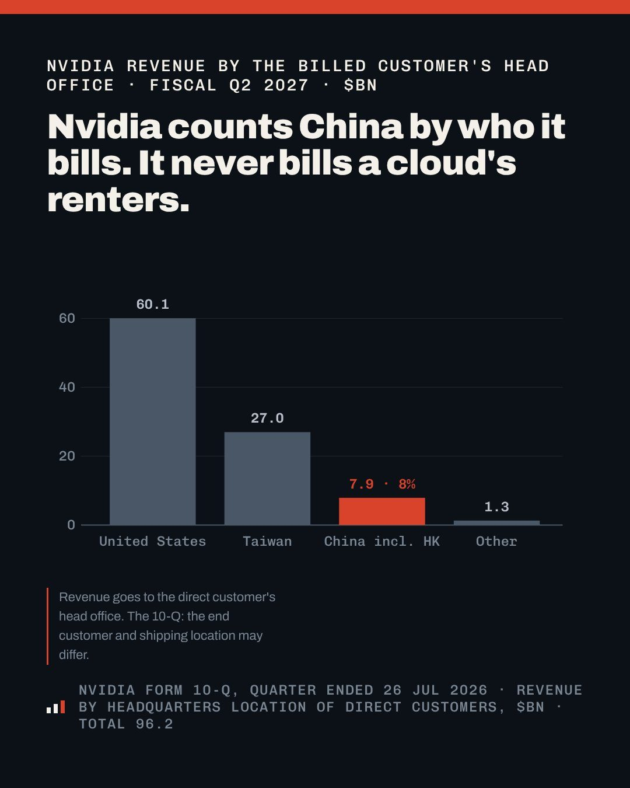

AI och tech
Delvis obekräftatNvidia sätter tak för Kina – högst 49 procent av molnbolagens nya kunder får vara kinesiska

Nvidia har börjat kräva att molnbolag och datacenter som hyr ut dess AI-chip säljer minst 51 procent av sina tjänster till kunder utanför Kina, enligt Financial Times. Beskedet ska ha lämnats muntligt av Nvidias säljare och gäller nya avtal i hela världen. Syftet uppges vara att täppa till vägen där kinesiska AI-bolag hyr Nvidia-kraft utomlands, men Nvidia har varken bekräftat eller dementerat.
Enligt Financial Times, som citerar fem personer med insyn, har Nvidia börjat ge sina moln- och datacenterkunder ett nytt villkor: minst 51 procent av deras tjänster ska säljas till bolag som inte är kinesiska. Kinesiska kunder får alltså stå för högst 49 procent. Beskedet har enligt Daniel Koss lämnats muntligt av Nvidias säljare och regionala team, inte skriftligt, och gäller kunder i hela världen, inte bara i Asien. Bara nya avtal berörs, befintliga hyresavtal får vara kvar, skriver Bet The Decade. Enligt Roxbit har teamen gett beskedet sedan i somras.
Nvidia har varken bekräftat eller dementerat uppgiften, men sade enligt investeraren Guillermo Flor att "USA inte kan vinna AI-kapplöpningen om inte USA:s AI-infrastruktur vinner i hela världen". Reuters kunde inte direkt bekräfta FT:s uppgifter, påpekar Joe Rosa.
Vägen runt exportreglerna
USA:s exportregler hindrar Nvidia från att sälja sina kraftfullaste chip till Kina. Men många kinesiska bolag har i stället hyrt samma datorkraft över internet hos molnbolag utomlands för att träna sina AI-modeller, förklarar Joe Rosa. Det är den vägen regeln riktar in sig på. Hur mycket pengar det handlar om syns i en siffra som Bet The Decade återger från FT: ett rack med Nvidias B300-chip som kostar runt 600 000 dollar utanför Kina ska förra månaden ha bytt ägare i Kina för omkring 2,8 miljoner dollar, nästan fem gånger så mycket.
Enligt Daniel Koss drabbas framför allt mindre molnbolag i Sydostasien, där kinesiska techbolag redan var den största kundgruppen. Tidigare i år ska en striktare vitlista från Nvidia ha mer än halverat antalet asiatiska kunder som fick köpa bolagets AI-chip. Koss tolkning är att det fortfarande går att sälja till Kina, men att affärsmodellen att köpa Nvidia-chip och hyra ut dem till kinesiska kunder inte längre fungerar. "Jensen Huang säljer inte bara chip längre, han bestämmer vem som får hyra dem", skriver Guillermo Flor.
Ett tak, inte en mur
Flera konton påpekar att regeln lämnar mycket utrymme. "Det är inte en mur, det är en kvot på 49 procent", skriver kommentatorn James Xu. Analyskontot The Full Read går längre och ifrågasätter hur mycket regeln faktiskt ändrar. Nvidia redovisar sin Kinaförsäljning efter var köparens huvudkontor ligger, och en kinesisk firma som hyr hos ett molnbolag är aldrig den som Nvidia skickar fakturan till. Enligt kontot stod Kina för 7,9 miljarder dollar, åtta procent av intäkterna, förra kvartalet, och Nvidias prognos för innevarande kvartal räknar inte med någon datacenterförsäljning i Kina alls. Om molnbolagen redan hyr ut mindre än 49 procent till kinesiska kunder, vad stoppar regeln då, frågar kontot. Nvidia redovisar nästa kvartal den 17 november.
Det koreanska analyskontot Kreia Notes fäster sig vid att beskedet är muntligt: ansvaret försvinner men kontrollen finns kvar. När chipen stoppas läcker kraften ut via uthyrning, och därför tittar reglerna nu på bokföringen i stället för på chipen.
Kopplingen till Huawei
Beskedet kommer samma dag som uppgifter om att DeepSeek ska träna sin nästa stora modell på Huaweis chip. Kontot China Tech Lens skriver att stora Nvidia-kluster för kinesiska labb nu blir svårare att få tag på, och att Huaweis chip därmed ser mindre ut som ett val och mer som den enda vägen.
Så vet vi det
Källmix: 9 källor – 6 analys, 1 journalist, 2 debattör. Etablerad media utgör 0 av 9.
- Analys Daniel Koss: detaljerna i FT:s uppgifter och vilka som drabbas
- Journalist Joe Rosa: varför regeln finns, Reuters kunde inte bekräfta
- Analys Roxbit: muntligt besked sedan sommaren, inte bekräftat
- Analys The Full Read: Nvidia räknar Kina efter vem det fakturerar
- Analys Bet The Decade: prisskillnaden på B300-rack enligt FT
- Debattör Guillermo Flor, investerare: Nvidias kommentar och "vem som får hyra"
- Debattör James Xu: "inte en mur, utan en kvot"
- Analys China Tech Lens: Huawei blir den enda vägen
- Analys Kreia Notes (Sydkorea): muntligt, utan ansvar men med kontroll
Uppgiften kommer från Financial Times, som citerar fem personer med insyn. Vi har inte läst FT:s artikel utan bygger på hur många konton på X återger den, och Reuters har enligt ett konto inte direkt kunnat bekräfta den. Att regeln gällt sedan sommaren och att en vitlista tidigare halverat antalet asiatiska kunder bygger på återgivningar av FT. Siffran 7,9 miljarder dollar för Kina kommer från ett analyskonto som hänvisar till Nvidias kvartalsrapport.
Fördjupa
Frågorna öppnar Grok i en ny flik med artikeln som underlag. AI-svar kan innehålla fel, så kontrollera mot källorna.
- Varför hyr kinesiska AI-bolag datorkraft hos molnbolag utomlands? ↗
- Kan Nvidia bestämma vem molnbolagen säljer sina tjänster till? ↗
- Vad betyder 49-procentstaket för mindre molnbolag i Sydostasien? ↗
- Varför lämnas beskedet muntligt och inte skriftligt? ↗
- Hur påverkar regeln Huaweis chans att ta över den kinesiska marknaden? ↗
Läs vidare
Uppdateringslogg
- 17:25 – Artikeln publicerad.